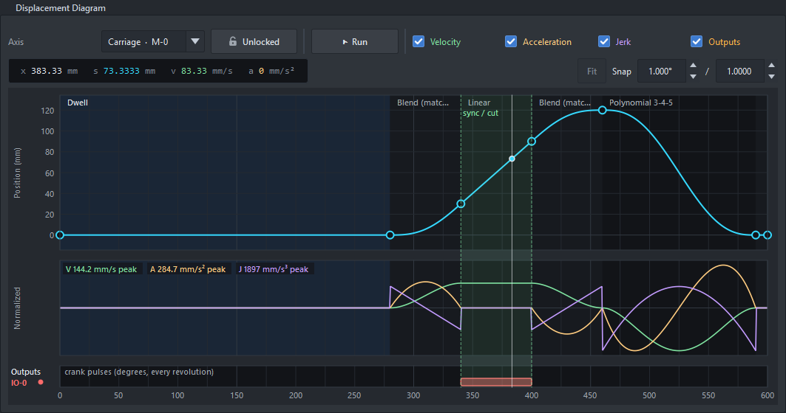

A flying saw, laser or shear cuts moving material: a carriage catches up with the line, rides it while the cut is made, and returns for the next piece. The piece length usually changes on the fly. Tick Cut-length mode in the Crank page. An encoder can measure the line, or a driven crank's motor can feed it.
With a driven crank there is no encoder: the crank motor feeds the line, and its counts are the line.
Line per motor rev replaces the wheel: the line one motor revolution feeds, through its gearbox and feed
rolls. Line speed, the ramp and the motor max read in m/min, and the motor runs at that speed through every cut,
whatever the length. Nothing measures the line, so material slipping in the feed rolls shows up as a wrong piece
length. Where that matters, put an encoder on the line. The rpm command and setpoint are cuts per
minute at the design length.
Only the wait at the start of the cycle (where every crank axis dwells) stretches or shrinks with the length. The rest (accelerate, sync, decelerate, return) keeps its line distance, so speeds, limits and motor speeds are the same at every length: the Crank page gives one max line speed for all lengths. Every crank axis must start with a dwell, and crank output pulses come after it.

The carriage: wait (dwell), blend up to line speed, ride the line (linear, shaded green: the sync), blend down, return. The saw plunges inside the sync.
The carriage leaves home while the next cut line is still upstream of the blade, accelerates (a Blend), and reaches line speed exactly on it at the start of the sync (the carriage's Linear segment); the blade then rides the cut line through the sync. The Cut length row on the Board page shows the live distance from the blade to the cut line, which reads on the cut line through the sync.
length command) sets the finished length. It
takes effect with the next cut; below the shortest piece it is refused.Build one from scratch in Worked examples: a flying saw.